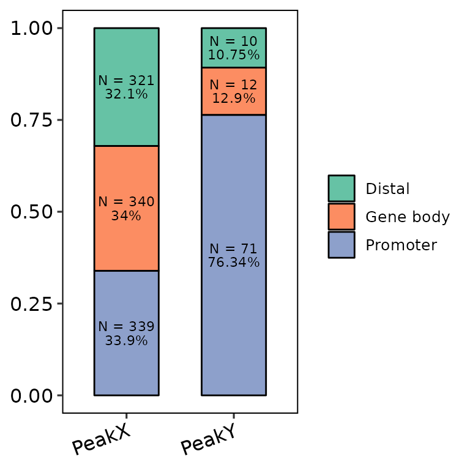
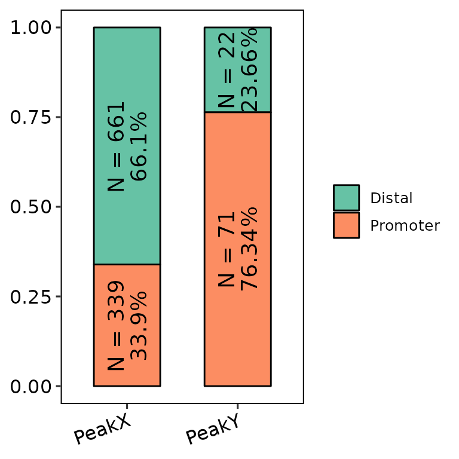
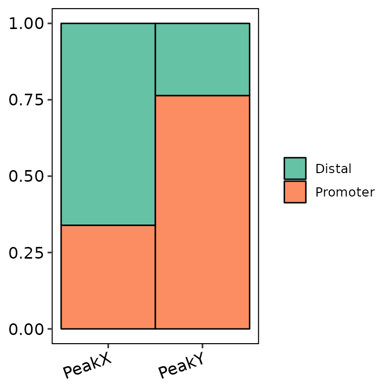
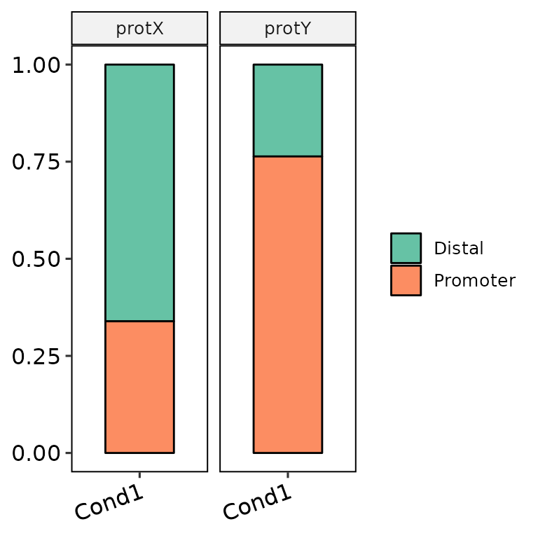
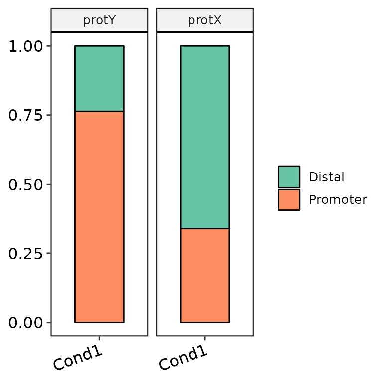
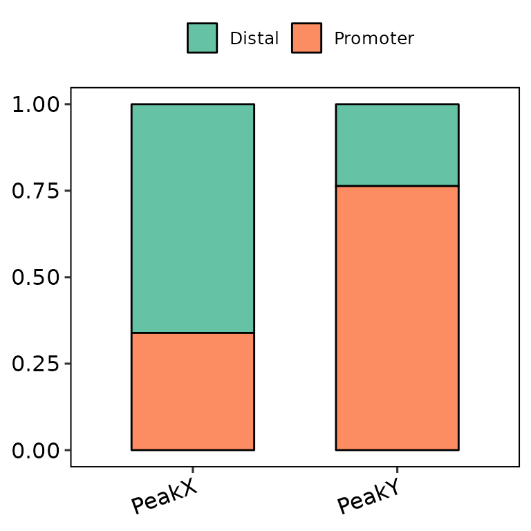
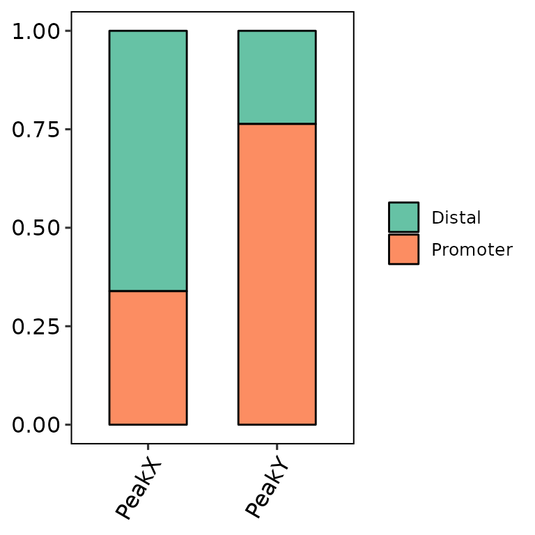

Run barAnno()
barAnno() draws an ggplot2-based barplot …
Required input
As input, barAnno() takes a named list of data frames with the column annotation.
First, peak coordinates have to be read and the coordinate columns must be named as seqnames, start and end. ^Note: Since I will work with lists, I will use the purrr package for most of the data transformations.^
# read the peaks into a list
peak_list <- list.files("../testdata", "peak", full.names = T, recursive = T) %>%
purrr::set_names(c("PeakX", "PeakY")) %>%
purrr::map(~read.delim(.x)) %>%
# the files have the already annotated peaks, but we
# will use only the coordinates to make the annotation ourselves
# the columns seqnames, start and end are required
purrr::map(~dplyr::select(.x, seqnames, start, end))
peak_list[[1]][1:5,]## seqnames start end
## 1 chr7 3664442 3664743
## 2 chr8 83199578 83200817
## 3 chr13 20147802 20148111
## 4 chr4 56639205 56639610
## 5 chr18 61614281 61614892Then, can use ChIPseeker::annotatePeak() to annotate the peaks into genomic regions.
# Load annotations for mouse mm10 genome
library(TxDb.Mmusculus.UCSC.mm10.knownGene) ## Loading required package: GenomicFeatures## Warning: package 'GenomicFeatures' was built under R version 4.0.4## Loading required package: BiocGenerics## Warning: package 'BiocGenerics' was built under R version 4.0.5## Loading required package: parallel##
## Attaching package: 'BiocGenerics'## The following objects are masked from 'package:parallel':
##
## clusterApply, clusterApplyLB, clusterCall, clusterEvalQ,
## clusterExport, clusterMap, parApply, parCapply, parLapply,
## parLapplyLB, parRapply, parSapply, parSapplyLB## The following objects are masked from 'package:dplyr':
##
## combine, intersect, setdiff, union## The following objects are masked from 'package:stats':
##
## IQR, mad, sd, var, xtabs## The following objects are masked from 'package:base':
##
## anyDuplicated, append, as.data.frame, basename, cbind, colnames,
## dirname, do.call, duplicated, eval, evalq, Filter, Find, get, grep,
## grepl, intersect, is.unsorted, lapply, Map, mapply, match, mget,
## order, paste, pmax, pmax.int, pmin, pmin.int, Position, rank,
## rbind, Reduce, rownames, sapply, setdiff, sort, table, tapply,
## union, unique, unsplit, which.max, which.min## Loading required package: S4Vectors## Loading required package: stats4##
## Attaching package: 'S4Vectors'## The following objects are masked from 'package:dplyr':
##
## first, rename## The following object is masked from 'package:base':
##
## expand.grid## Loading required package: IRanges##
## Attaching package: 'IRanges'## The following object is masked from 'package:purrr':
##
## reduce## The following objects are masked from 'package:dplyr':
##
## collapse, desc, slice## Loading required package: GenomeInfoDb## Warning: package 'GenomeInfoDb' was built under R version 4.0.5## Loading required package: GenomicRanges## Loading required package: AnnotationDbi## Loading required package: Biobase## Welcome to Bioconductor
##
## Vignettes contain introductory material; view with
## 'browseVignettes()'. To cite Bioconductor, see
## 'citation("Biobase")', and for packages 'citation("pkgname")'.##
## Attaching package: 'AnnotationDbi'## The following object is masked from 'package:dplyr':
##
## select
library(org.Mm.eg.db)##
# Annotate peaks into csAnno object
peak_list_csAnno <- peak_list %>%
# convert to granges
purrr::map(~plyranges::as_granges(.x)) %>%
# annotate peaks
purrr::map(~ChIPseeker::annotatePeak(peak = .x, tssRegion = c(-2500, 2500),
TxDb = TxDb.Mmusculus.UCSC.mm10.knownGene,
annoDb = "org.Mm.eg.db", level = "transcript"))## ## 'select()' returned 1:many mapping between keys and columns
## 'select()' returned 1:many mapping between keys and columnsNow that peaks are annotated in the different genomic regions and we have created a csAnno object for each set of peaks, we must retrieve the anno data frame inside each csAnno object. This is not really necessary, since the corresponding transformations are already done inside barAnno(), but it is recommendable in case we want to do more things with these data.
peak_list <- peak_list_csAnno %>% purrr::map(~as_tibble(.x))Default run
We can run barAnno() using as input:
- The list of data frames with the coordinates of the peaks and the annotated regions
barAnno(anno_list = peak_list)
- The list of csAnno objects that output from
ChIPseeker::annotatePeak()
barAnno(anno_list = peak_list_csAnno)Genomic annotations
barAnno(anno_list = peak_list, anno_num = 2) # default
barAnno(anno_list = peak_list, anno_num = 3)
barAnno(anno_list = peak_list, anno_num = "all")Customize plot
Change bar width
barAnno(anno_list = peak_list, width = 0.6) # default
barAnno(anno_list = peak_list, width = 0.9)
barAnno(anno_list = peak_list, width = 1)
Divide pannels
barAnno(anno_list = peak_list, anno_names = c("Cond1", "Cond1"),
protein = c("protX", "protY"), protein_order = c("protY", "protX"))

Set labels
barAnno(anno_list = peak_list, main = "This is a title", subtitle = "This is a subtitle",
xlab = "This is the X-axis label", ylab = "This is the Y-axis label")Legend position
barAnno(anno_list = peak_list, legend_position = "none")
barAnno(anno_list = peak_list, legend_position = "left")
barAnno(anno_list = peak_list, legend_position = "bottom")
barAnno(anno_list = peak_list, legend_position = "top")Change color palette
If the length of color_palette argument in barAnno() is 1 (e.g. Set2, the default), the function uses a predefined palette passed through scale_fill_brewer(). Available palettes can be found here: https://ggplot2.tidyverse.org/reference/scale_brewer.html. For example:
barAnno(anno_list = peak_list, color_palette = "Set1")
barAnno(anno_list = peak_list, color_palette = "Pastel2")
barAnno(anno_list = peak_list, color_palette = "Oranges")Nevertheless, if color_palette is a character vector of length greater than 1 and has valid color names (e.g. c("blue", "gold3")), the function takes these colors and passes them through scale_fill_manual() to fill the bars. If the number of annotated regions is greater than the default of 2 (i.e. anno_num = 3 or anno_num = "all"), the number of colors passed through color_palette must be the same length.


barAnno(anno_list = peak_list, anno_num = "all",
color_palette = c("blue", "gold3", "pink", "darkgreen", "darkred", "orange", "purple"))The colors can be also generated through other functions, such as rainbow() or circlize::rand_col().
Further costumization
Since barAnno() outputs a ggplot2-based bar plot, it can be further customized with scales or theme, etc.